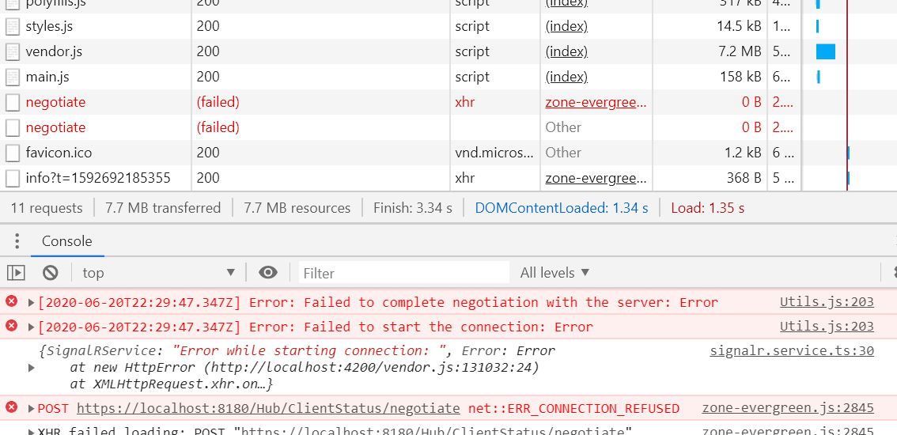

The default port for the chat-hub is localhost:8180 for dev purposes.
Configurations are found in the services/signalr.service.ts file. If you press
F12 and see errors like shown below, this indicates you do not have a open
connection on port 8180.
To Debug
Press F12 and you should see this in the network tab
